Clase 1 Introducción
1.1 ¿Qué es aprendizaje de máquina (machine learning)?
Métodos computacionales para aprender de datos con el fin de producir reglas para mejorar el desempeño en alguna tarea o toma de decisión.
En este curso nos enfocamos en las tareas de aprendizaje supervisado (predecir o estimar una variable respuesta a partir de datos de entrada) y aprendizaje no supervisado (describir estructuras interesantes en datos, donde no necesariamente hay una respuesta que predecir).
Ejemplos de tareas de aprendizaje:
- Predecir si un cliente de tarjeta de crédito va a caer en impago en los próximos tres meses.
- Reconocer palabras escritas a mano (OCR).
- Detectar llamados de ballenas en grabaciones de boyas.
- Estimar el ingreso mensual de un hogar a partir de las características de la vivienda, posesiones y equipamiento y localización geográfica.
- Dividir a los clientes de Netflix según sus gustos.
- Recomendar artículos a clientes de un programa de lealtad o servicio online.
Las razones usuales para intentar resolver estos problemas computacionalmente son diversas:
- Quisiéramos obtener una respuesta barata, rápida, automatizada, y con suficiente precisión. Por ejemplo, reconocer caracteres en una placa de coche de una fotografía se puede hacer por personas, pero eso es lento y costoso. Igual oír cada segundo de grabación de las boyas para saber si hay ballenas o no. Hacer mediciones directas del ingreso de un hogar requiere mucho tiempo y esfuerzo.
- Quisiéramos superar el desempeño actual de los expertos o de reglas simples utilizando datos: por ejemplo, en la decisión de dar o no un préstamo a un solicitante, puede ser posible tomar mejores decisiones con algoritmos que con evaluaciones personales o con reglas simples que toman en cuenta el ingreso mensual, por ejemplo.
- Queremos entender de manera más completa y sistemática el comportamiento de un fenómeno, identificando variables o patrones importantes.
Es posible aproximarse a todos estos problemas usando reglas (por ejemplo, si los pixeles del centro de la imagen están vacíos, entonces es un cero, si el crédito total es mayor al 50% del ingreso anual, declinar el préstamo, etc) Las razones para intentar usar aprendizaje para producir reglas en lugar de intentar construir estas reglas directamente son, por ejemplo:
- Cuando conjuntos de reglas creadas a mano se desempeñan mal (por ejemplo, para otorgar créditos, reconocer caracteres, etc.)
- Reglas creadas a mano pueden ser difíciles de mantener (por ejemplo, un corrector ortográfico.)
Ejemplo: reconocimiento de dígitos escritos a mano
¿Cómo reconocer los siguientes dígitos de manera automática?
En los datos tenemos los valores de cada pixel (los caracteres son imagenes de 16x16 pixeles), y una etiqueta asociada, que es el número que la imagen representa. Podemos ver las imágenes y las etiquetas:
library(tidyverse)
zip_train <- read_csv(file = 'datos/zip-train.csv')
muestra_1 <- sample_n(zip_train, 10)
graficar_digitos(muestra_1)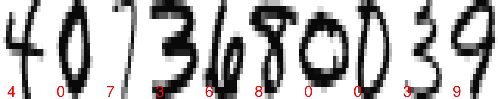
muestra_2 <- sample_n(zip_train, 10)
graficar_digitos(muestra_2)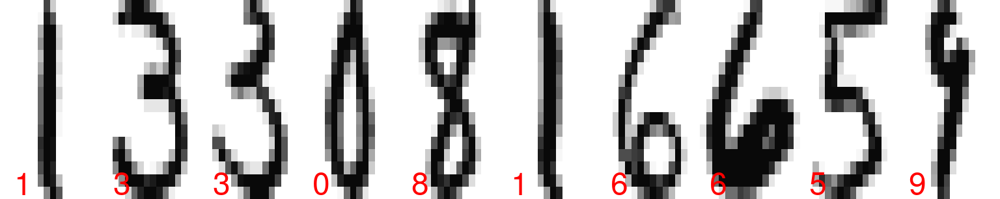
Los 16x16=256 están escritos acomodando las filas de la imagen en
vector de 256 valores (cada renglón de zip_train). Un dígito entonces
se representa como sigue:
dim(zip_train)## [1] 7291 257as.numeric(zip_train[1,])## [1] 6.000 -1.000 -1.000 -1.000 -1.000 -1.000 -1.000 -1.000 -0.631 0.862
## [11] -0.167 -1.000 -1.000 -1.000 -1.000 -1.000 -1.000 -1.000 -1.000 -1.000
## [21] -1.000 -1.000 -1.000 -0.992 0.297 1.000 0.307 -1.000 -1.000 -1.000
## [31] -1.000 -1.000 -1.000 -1.000 -1.000 -1.000 -1.000 -1.000 -1.000 -0.410
## [41] 1.000 0.986 -0.565 -1.000 -1.000 -1.000 -1.000 -1.000 -1.000 -1.000
## [51] -1.000 -1.000 -1.000 -1.000 -0.683 0.825 1.000 0.562 -1.000 -1.000
## [61] -1.000 -1.000 -1.000 -1.000 -1.000 -1.000 -1.000 -1.000 -1.000 -0.938
## [71] 0.540 1.000 0.778 -0.715 -1.000 -1.000 -1.000 -1.000 -1.000 -1.000
## [81] -1.000 -1.000 -1.000 -1.000 -1.000 0.100 1.000 0.922 -0.439 -1.000
## [91] -1.000 -1.000 -1.000 -1.000 -1.000 -1.000 -1.000 -1.000 -1.000 -1.000
## [101] -0.257 0.950 1.000 -0.162 -1.000 -1.000 -1.000 -0.987 -0.714 -0.832
## [111] -1.000 -1.000 -1.000 -1.000 -1.000 -0.797 0.909 1.000 0.300 -0.961
## [121] -1.000 -1.000 -0.550 0.485 0.996 0.867 0.092 -1.000 -1.000 -1.000
## [131] -1.000 0.278 1.000 0.877 -0.824 -1.000 -0.905 0.145 0.977 1.000
## [141] 1.000 1.000 0.990 -0.745 -1.000 -1.000 -0.950 0.847 1.000 0.327
## [151] -1.000 -1.000 0.355 1.000 0.655 -0.109 -0.185 1.000 0.988 -0.723
## [161] -1.000 -1.000 -0.630 1.000 1.000 0.068 -0.925 0.113 0.960 0.308
## [171] -0.884 -1.000 -0.075 1.000 0.641 -0.995 -1.000 -1.000 -0.677 1.000
## [181] 1.000 0.753 0.341 1.000 0.707 -0.942 -1.000 -1.000 0.545 1.000
## [191] 0.027 -1.000 -1.000 -1.000 -0.903 0.792 1.000 1.000 1.000 1.000
## [201] 0.536 0.184 0.812 0.837 0.978 0.864 -0.630 -1.000 -1.000 -1.000
## [211] -1.000 -0.452 0.828 1.000 1.000 1.000 1.000 1.000 1.000 1.000
## [221] 1.000 0.135 -1.000 -1.000 -1.000 -1.000 -1.000 -1.000 -0.483 0.813
## [231] 1.000 1.000 1.000 1.000 1.000 1.000 0.219 -0.943 -1.000 -1.000
## [241] -1.000 -1.000 -1.000 -1.000 -1.000 -0.974 -0.429 0.304 0.823 1.000
## [251] 0.482 -0.474 -0.991 -1.000 -1.000 -1.000 -1.000- Un enfoque más utilizado anteriormente para resolver este tipo de problemas consistía en procesar estas imágenes con filtros hechos a mano (por ejemplo, calcular cuántos pixeles están prendidos, si existen ciertas curvas o trazos) para después construir reglas para determinar cada dígito. Actualmente, el enfoque más exitoso es utilizar métodos de aprendizaje que aprendan automáticamente esos filtros y esas reglas basadas en filtros (redes convolucionales).
Ejemplo: predecir ingreso trimestral
Consideramos la medición de ingreso total trimestral para una muestra de hogares de la encuesta de ENIGH. Cada una de estas mediciones es muy costosa en tiempo y dinero.
dat_ingreso <- read_csv(file = 'datos/enigh-ejemplo.csv')
head(dat_ingreso) %>%
select(TAM_HOG, INGCOR, NOM_ENT_1, FOCOS,
PISOS, marginación, tamaño_localidad) %>%
knitr::kable()| TAM_HOG | INGCOR | NOM_ENT_1 | FOCOS | PISOS | marginación | tamaño_localidad |
|---|---|---|---|---|---|---|
| 4 | 30238.13 | Jalisco | 11 | 3 | Muy bajo | De 15 mil a 100 mil |
| 3 | 61147.41 | México | 10 | 2 | Bajo | De 15 mil a 100 mil |
| 2 | 6170.21 | Puebla | 1 | 1 | Alto | De 2500 a 15 mil |
| 2 | 14639.79 | Distrito Federal | 5 | 2 | Muy bajo | 100 mil o más |
| 1 | 40638.35 | Chihuahua | 8 | 3 | Muy bajo | De 15 mil a 100 mil |
| 2 | 21172.35 | Baja California | 4 | 2 | Muy bajo | 100 mil o más |
ggplot(dat_ingreso, aes(x=INGTOT/1000)) +
geom_histogram(bins = 100) +
scale_x_log10(breaks = c(2.5, 5, 10, 20, 40, 80, 160, 320, 640, 1280)) +
xlab("Ingreso trimestral (miles de pesos)")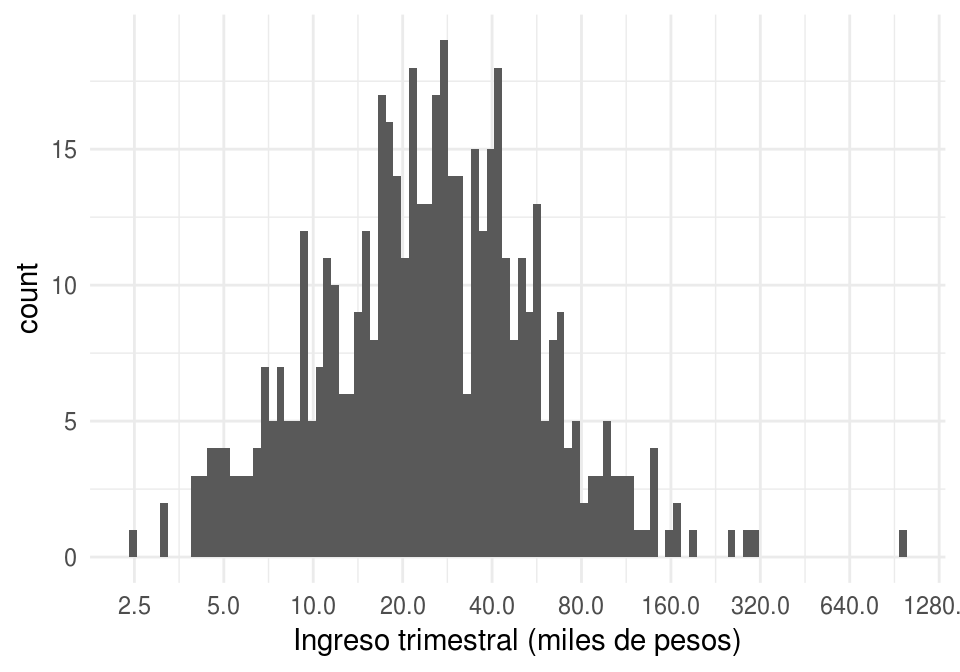
Pero quizá podemos usar otras variables más fácilmente medibles para predecir el ingreso de un hogar. Por ejemplo, si consideramos el número de focos en la vivienda:
ggplot(dat_ingreso, aes(x = FOCOS, y = INGTOT/1000)) +
geom_point() +
scale_y_log10(breaks = c(2.5, 5, 10, 20, 40, 80, 160, 320, 640, 1280)) +
ylab("Ingreso trimestral (miles de pesos)") + xlim(c(0,50))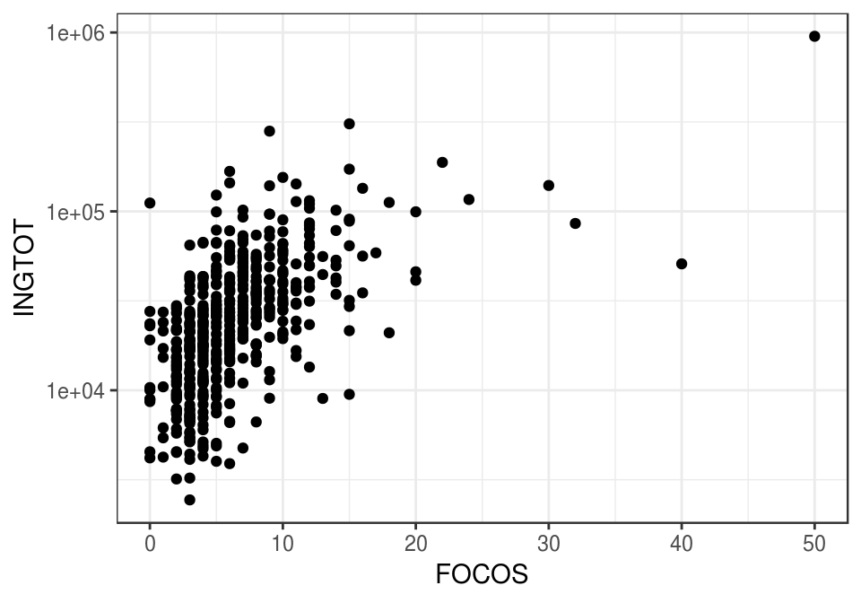
O el tamaño de la localidad:
ggplot(dat_ingreso, aes(x = tamaño_localidad, y = INGTOT/1000)) +
geom_boxplot() +
scale_y_log10(breaks = c(2.5, 5, 10, 20, 40, 80, 160, 320, 640, 1280)) +
ylab("Ingreso trimestral (miles de pesos)")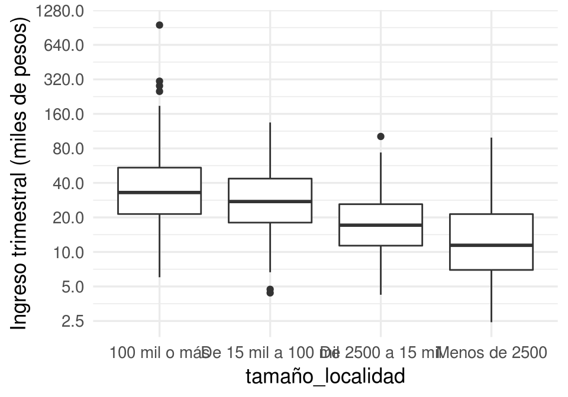
- En algunas encuestas se pregunta directamente el ingreso mensual del hogar. La respuesta es generalmente una mala estimación del verdadero ingreso, por lo que actualmente se prefiere utilizar aprendizaje para estimar a partir de otras variables que son más fielmente reportadas por encuestados (años de estudio, ocupación, número de focos en el hogar, etc.)
Aprendizaje supervisado
Las tareas de aprendizaje se divide en dos grandes partes: aprendizaje supervisado y aprendizaje no supervisado.
- Aprendizaje supervisado Construir un modelo o algoritmo para predecir o estimar un target o una variable de salida a partir de ciertas variables de entrada.
Predecir y estimar, en este contexto, se refieren a cosas similares. Generalmente se usa predecir cuando se trata de variables que no son observables ahora, sino en el futuro, y estimar cuando nos interesan variables actuales que no podemos observar ahora por costos o por la naturaleza del fenómeno.
Por ejemplo, para identificar a los clientes con alto riesgo de impago de tarjeta de crédito, utilizamos datos históricos de clientes que han pagado y no han pagado. Con estos datos entrenamos un algoritmo para detectar anticipadamente los clientes con alto riesgo de impago.
Usualmente dividimos los problemas de aprendizaje supervisado en dos tipos, dependiendo de la variables salida:
- Problemas de regresión: cuando la salida es una variable numérica. El ejemplo de estimación de ingreso es un problema de regresión
- Problemas de clasificación: cuando la salida es una variable categórica. El ejemplo de detección de dígitos escritos a manos es un problema de clasificación.
Ejemplo: predecir el rendimiento de un coche.
Estimar directamente el rendimiento (km por litro de combustible) de un coche es costoso: hay que hacer varias pruebas en diversas condiciones, etc. ¿Podríamos estimar el rendimiento de un coche usando variables más accesibles, peso del coche, año de producción, etc.?
library(ISLR)
datos <- Auto[, c('name', 'weight','year', 'mpg')]
datos$peso_kg <- datos$weight*0.45359237
datos$rendimiento_kpl <- datos$mpg*(1.609344/3.78541178)
set.seed(213)
datos_muestra <- sample_n(datos, 50)
datos_muestra %>% select(name, peso_kg, rendimiento_kpl)## name peso_kg rendimiento_kpl
## 9 pontiac catalina 2007.1462 5.952012
## 139 dodge coronet custom (sw) 2021.6612 5.952012
## 248 datsun b210 gx 938.9362 16.750662
## 229 ford granada 1598.9131 7.865159
## 166 chevrolet monza 2+2 1461.0210 8.502874
## 321 datsun 510 hatchback 1104.0438 15.730317
## 5 ford torino 1564.4401 7.227443
## 145 toyota corona 747.9738 13.179455
## 282 mercury zephyr 6 1356.2412 8.417845
## 297 amc spirit dl 1211.0916 11.648938
## 19 datsun pl510 966.1517 11.478880
## 320 mazda 626 1153.0318 13.306998
## 218 buick opel isuzu deluxe 977.4916 12.754311
## 1 chevrolet chevelle malibu 1589.3877 7.652587
## 195 amc hornet 1399.3325 9.565733
## 317 dodge aspen 1533.5958 8.120245
## 35 plymouth satellite custom 1559.9042 6.802299
## 356 honda prelude 1002.4391 14.327343
## 250 oldsmobile cutlass salon brougham 1526.3383 8.460360
## 373 pontiac phoenix 1240.5751 11.478880
## 80 renault 12 (sw) 992.9137 11.053736
## 201 ford granada ghia 1621.1391 7.652587
## 202 pontiac ventura sj 1653.3442 7.865159
## 59 dodge colt hardtop 964.3374 10.628593
## 277 saab 99gle 1267.7907 9.183104
## 108 amc gremlin 1265.0691 7.652587
## 329 mercedes-benz 240d 1474.1752 12.754311
## 220 plymouth arrow gs 1043.2625 10.841165
## 209 plymouth volare premier v8 1787.1539 5.526868
## 263 chevrolet monte carlo landau 1553.5539 8.162759
## 178 audi 100ls 1221.9778 9.778305
## 182 honda civic cvcc 814.1983 14.029742
## 16 plymouth duster 1285.0272 9.353162
## 191 ford gran torino 1911.8918 6.164584
## 113 ford pinto 1047.7984 8.077730
## 285 dodge aspen 6 1524.0704 8.757960
## 49 ford mustang 1423.8264 7.652587
## 243 bmw 320i 1179.3402 9.140590
## 271 toyota celica gt liftback 1140.7848 8.970532
## 349 toyota tercel 929.8644 16.027918
## 339 plymouth reliant 1129.4450 11.563909
## 309 pontiac phoenix 1159.3821 14.242314
## 345 plymouth champ 850.4857 16.580605
## 91 mercury marquis brougham 2246.1894 5.101724
## 275 audi 5000 1283.6664 8.630417
## 46 amc hornet sportabout (sw) 1343.5406 7.652587
## 255 ford fairmont (auto) 1344.9014 8.587903
## 7 chevrolet impala 1974.9412 5.952012
## 378 plymouth horizon miser 963.8838 16.155461
## 6 ford galaxie 500 1969.0445 6.377156Y podríamos comenzar graficando rendimiento contra peso. Cada punto representa un coche distinto. En esta gráfica vemos que los valores de rendimiento varían según según peso de una manera sistemática: cuanto más grande es el peso, más bajo es el rendimiento:
library(ggplot2)
ggplot(datos_muestra,
aes(x=peso_kg, y=rendimiento_kpl)) +
geom_point() 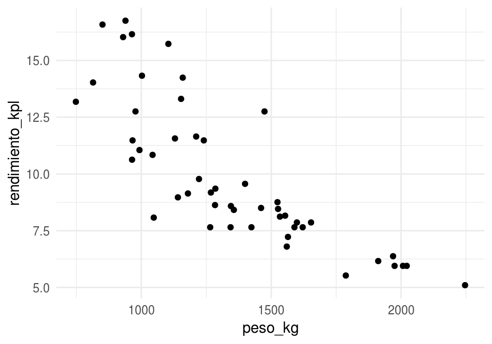
Podemos entonces ajustar una curva, que para cada nivel de peso da un valor de rendimiento que se ‘aleja lo menos posible’ de los valores de rendimiento cercanos. Por ejemplo: según la curva roja, ¿cómo haríamos la predicción para un peso de 1500 kg?
ggplot(datos_muestra,
aes(x=peso_kg, y=rendimiento_kpl)) + geom_point() +
geom_smooth(se =FALSE, colour='red', size=1.1,
span=0.4, method='loess') +
geom_smooth(se =FALSE, colour='gray', size=1.1,
span=2, method='loess')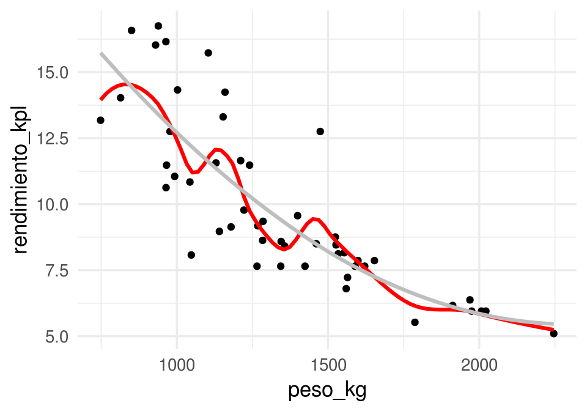
Aprendizaje no supervisado
- Aprendizaje no supervisado En este caso no hay target o variable salida. Buscamos modelar y entender las relaciones entre variables y entre observaciones, o patrones importantes o interesantes en los datos.
Los problemas supervisados tienen un objetivo claro: hacer las mejores predicciones posibles bajo ciertas restricciones. Los problemas no supervisados tienden a tener objetivos más vagos, y por lo mismo pueden ser más difíciles.
Ejemplo: tipos de coches en el mercado
Quisieramos encontrar categorías de coches tales que: las categorías son diferentes entre sí, y los coches en una misma categoría son similares entre sí. Esta agrupación nos permite entender la estructura general de los datos, cómo están organizados en términos de similitud de características.
En este ejemplo, encontramos un plano de máxima variabilidad donde proyectamos los coches, y después formamos grupos de coches similares:
autos <- Auto %>% select(mpg, displacement, horsepower, acceleration)
comps_autos <- princomp(autos, cor = TRUE)
clust <- hclust(dist(comps_autos$scores[,1:2]), method = 'ward.D')
autos$grupo <- cutree(clust, k = 4)
autos$Comp.1 <- comps_autos$scores[,1]
autos$Comp.2 <- comps_autos$scores[,2]
autos$nombre <- Auto$name
ggplot(autos, aes(x=Comp.1, y=Comp.2, colour=factor(grupo), label=nombre)) +
geom_point() 
¿Cómo interpretamos los grupos?
head(filter(autos, grupo==1))## mpg displacement horsepower acceleration grupo Comp.1 Comp.2
## 1 18 307 130 12.0 1 -1.817719 0.5042535
## 2 15 350 165 11.5 1 -2.800712 0.3938195
## 3 18 318 150 11.0 1 -2.310357 0.7966085
## 4 16 304 150 12.0 1 -2.213807 0.3989781
## 5 17 302 140 10.5 1 -2.225309 0.9183779
## 6 15 429 198 10.0 1 -3.900596 0.6915313
## nombre
## 1 chevrolet chevelle malibu
## 2 buick skylark 320
## 3 plymouth satellite
## 4 amc rebel sst
## 5 ford torino
## 6 ford galaxie 500head(filter(autos, grupo==3))## mpg displacement horsepower acceleration grupo Comp.1 Comp.2
## 1 22 198 95 15.5 3 0.01913364 -0.090471378
## 2 18 199 97 15.5 3 -0.26705470 -0.339015545
## 3 21 200 85 16.0 3 0.16412490 -0.315611651
## 4 21 199 90 15.0 3 -0.05362631 -0.004579963
## 5 19 232 100 13.0 3 -0.79359758 0.413938751
## 6 16 225 105 15.5 3 -0.63973365 -0.517394423
## nombre
## 1 plymouth duster
## 2 amc hornet
## 3 ford maverick
## 4 amc gremlin
## 5 amc gremlin
## 6 plymouth satellite customhead(filter(autos, grupo==2))## mpg displacement horsepower acceleration grupo Comp.1 Comp.2
## 1 24 113 95 15.0 2 0.50234800 0.3800473
## 2 27 97 88 14.5 2 0.79722704 0.7509781
## 3 24 107 90 14.5 2 0.52837050 0.5437610
## 4 26 121 113 12.5 2 -0.04757934 1.2605758
## 5 27 97 88 14.5 2 0.79722704 0.7509781
## 6 28 140 90 15.5 2 0.76454526 0.4100595
## nombre
## 1 toyota corona mark ii
## 2 datsun pl510
## 3 audi 100 ls
## 4 bmw 2002
## 5 datsun pl510
## 6 chevrolet vega 2300head(filter(autos, grupo==4))## mpg displacement horsepower acceleration grupo Comp.1 Comp.2
## 1 26 97 46 20.5 4 2.2421696 -1.1703377
## 2 25 110 87 17.5 4 1.0737328 -0.3205227
## 3 25 104 95 17.5 4 0.9902507 -0.3021997
## 4 22 140 72 19.0 4 1.1727317 -1.0419917
## 5 30 79 70 19.5 4 2.0927389 -0.5620939
## 6 31 71 65 19.0 4 2.1920905 -0.3319627
## nombre
## 1 volkswagen 1131 deluxe sedan
## 2 peugeot 504
## 3 saab 99e
## 4 chevrolet vega (sw)
## 5 peugeot 304
## 6 toyota corolla 12001.2 Aprendizaje Supervisado
Por el momento nos concentramos en problemas supervisados de regresión, es decir predicción de variables numéricas.
¿Cómo entendemos el problema de predicción?
Proceso generador de datos (modelo teórico)
Para entender lo que estamos intentando hacer, pensaremos en términos de modelos probabilísticos que generan los datos. La idea es que estos representan los procesos que generan los datos o las observaciones.
Si \(Y\) es la respuesta
que queremos predecir, y \(X\) es una entrada que queremos usar para predecir
\(Y\),
consideramos que las variables aleatorias \(Y\) y \(X\) están relacionadas como sigue:
\[Y=f(X)+\epsilon,\]
donde \(\epsilon\) es una término de error aleatorio que no depende de \(X\), y
que tiene valor esperado \(\textrm{E}(\epsilon)=0\).
- \(f\) expresa la relación sistemática que hay entre \(Y\) y \(X\): para cada valor
posible de \(X\), la
contribuciónde \(X\) a \(Y\) es \(f(X)\). - Pero \(X\) no determina a \(Y\), como en el ejemplo anterior de rendimiento de coches. Entonces agregamos una error aleatorio \(\epsilon\), con media cero (si la media no es cero podemos agregar una constante a \(f\)), que no contiene información acerca de \(X\) (independiente de \(X\)).
- \(\epsilon\) representa, por ejemplo, el efecto de variables que no hemos medido o procesos aleatorios que determinan la respuesta.
Ejemplo
Vamos a usar simulación para entender estas ideas: supongamos que \(X\) es el número de años de estudio de una persona y \(Y\) es su ingreso mensual. En primer lugar, estas son el número de años de estudio de 8 personas:
x <- c(1,7,10,0,0,5,9,13,2,4,17,18,1,2)Ahora supondremos que la dependencia de Y de X está dada por \(Y=f(X)+\epsilon\) por una función \(f\) que no conocemos (esta función está determinada por el fenómeno)
f <- function(x){
ifelse(x < 10, 1000*sqrt(x), 1000*sqrt(10))
}El ingreso no se determina únicamente por número de años de estudio. Suponemos entonces que hay algunas variables adicionales que perturban los niveles de \(f(X)\) por una cantidad aleatoria. Los valores que observamos de \(Y\) están dados entonces por \(Y=f(X)+\epsilon\).
Entonces podríamos obtener, por ejemplo:
x_g <- seq(0,20,0.5)
y_g <- f(x_g)
dat_g <- data.frame(x = x_g, y = y_g)
set.seed(281)
error <- rnorm(length(x), 0, 500)
y <- f(x) + error
datos <- data_frame(x = x, y = y)
datos$y_media <- f(datos$x)
ggplot(datos, aes(x = x, y = y)) + geom_point() +
geom_line(data=dat_g, colour = 'blue', size = 1.1) +
geom_segment(aes(x = x, xend = x, y = y, yend = y_media), col='red')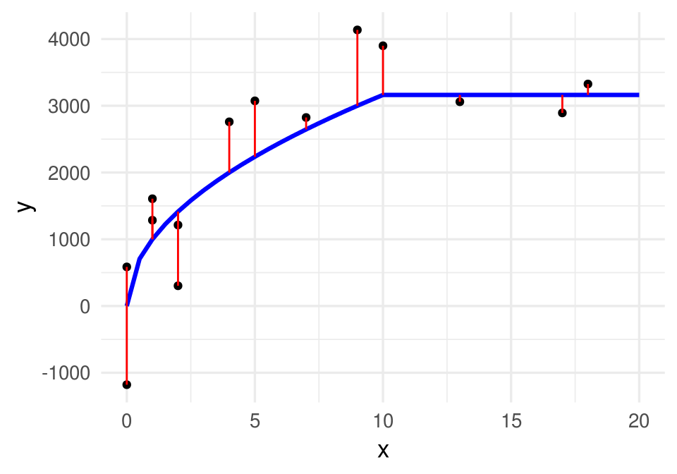
En problemas de aprendizaje nunca conocemos esta \(f\) verdadera, aunque quizá sabemos algo acerca de sus propiedades (por ejemplo, continua, de variación suave). Lo que tenemos son los datos, que también podrían haber resultado en (para otra muestra de personas, por ejemplo):
set.seed(28015)
error <- rnorm(length(x), 0, 500)
y <- f(x) + error
datos <- data.frame(x = x, y = y)
ggplot(datos, aes(x = x, y = y)) + geom_point() 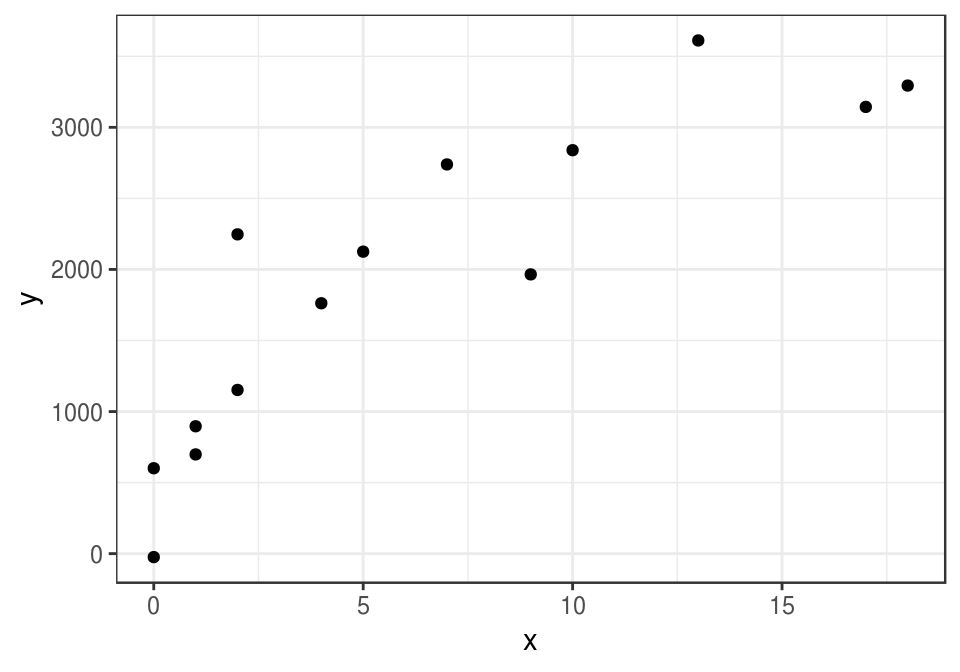
La siguiente observación nos da una idea de lo que intentamos hacer, aunque todavía es vaga y requiere refinamiento:
Bajo los supuestos del modelo \(Y=f(X)+\epsilon\), aprender de los datos significa intentar recuperar o estimar la forma de la función \(f\) que no conocemos. \(f\) representa la relación sistemática entre \(Y\) y \(X\).
¿Qué tan bien podemos estimar esa \(f\) que no conocemos, con los datos disponibles? ¿Qué significa estimar bien? Incluso este ejemplo tan simple muestra las dificultades que vamos a enfrentar, y la importancia de determinar con cuidado qué tanta información tenemos, y qué tan buenas pueden ser nuestras predicciones.
1.3 Predicciones
La idea es entonces producir una estimación de f que nos permita hacer predicciones.
Si denotamos por \(\hat{f}\) a una estimación de \(f\) construida a partir de los datos, podemos hacer predicciones aplicando \(\hat{f}\) a valores de \(X\). La predicción de Y la denotamos por \(\hat{Y}\), y \[\hat{Y}=\hat{f}(X).\] El error de predicción (residual) está dado por el valor observado menos la predicción: \[Y-\hat{Y}.\]
En nuestro ejemplo anterior, podríamos construir, por ejemplo, una recta ajustada por mínimos cuadrados:
curva_1 <- geom_smooth(data=datos,
method = "lm", se=FALSE, color="red", formula = y ~ x, size = 1.1)ggplot(datos, aes(x = x, y = y)) + geom_point() + curva_1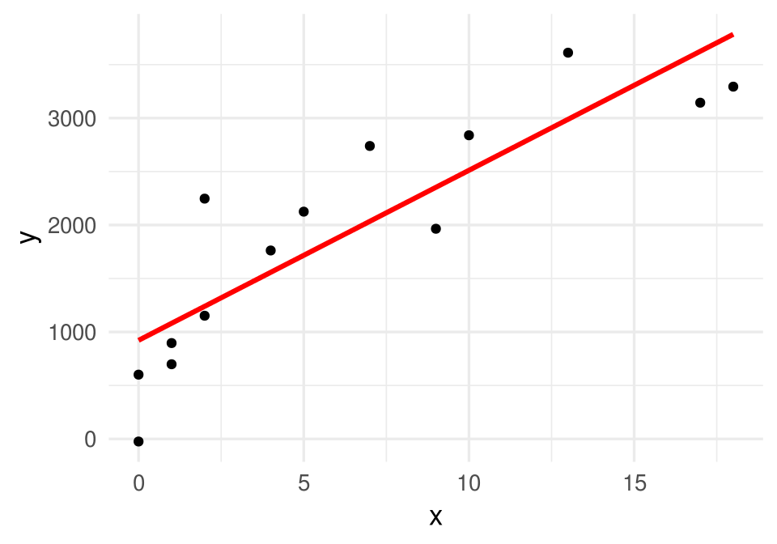
En este caso \(\hat{f}\) es una recta, y la podemos usar para hacer predicciones. Por ejemplo, si tenemos una observación con \(x_0=8\) años de estudio, nuestra predicción del ingreso \(\hat{y}=\hat{f}(8)\) sería
lineal <- lm(y ~ x,data = datos)
pred_1 <- predict(lineal, newdata = data.frame(x=8))
pred_1## 1
## 2193.561ggplot(datos, aes(x = x, y = y)) + geom_point() + curva_1 +
geom_segment(x = 0, xend = 8, y = pred_1, yend = pred_1, colour = 'salmon') +
geom_segment(x = 8, xend = 8, y = 0, yend = pred_1, colour = 'salmon') +
annotate('text', x = 0.5, y = pred_1 + 100, label = round(pred_1, 1)) +
geom_point( x= 8, y =3200, col='green', size = 4)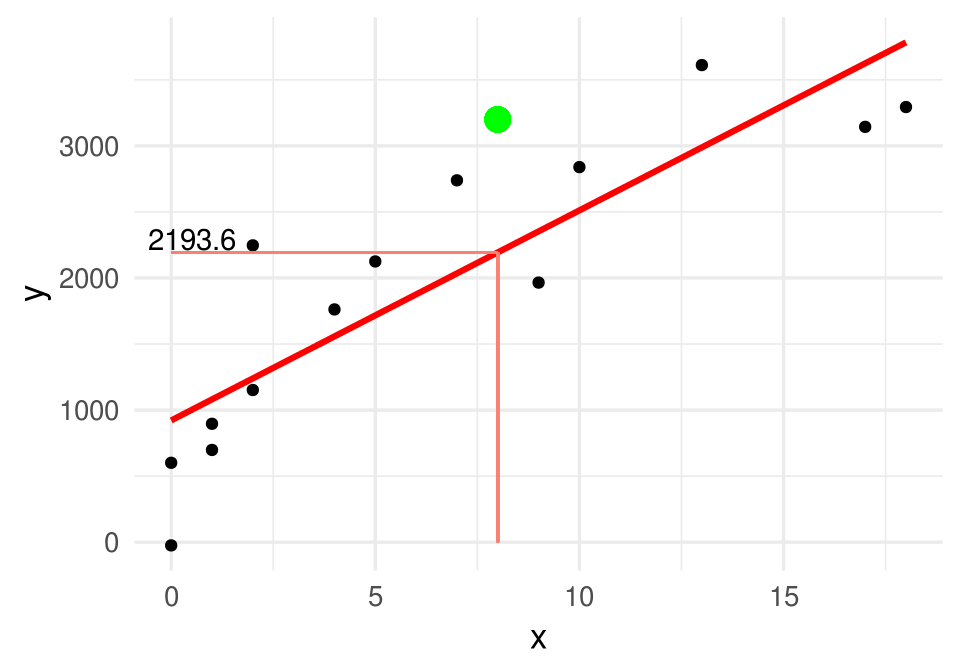
Si observamos que para esta observación con \(x_0=8\), resulta que el correspondiente ingreso es \(y_0=3200\), entonces el error sería
y_0 <- 3200
y_0 - pred_1## 1
## 1006.439En aprendizaje buscamos que estos errores sean lo más cercano a cero que sea posible.
1.4 Tarea de aprendizaje supervisado
El elemento faltante para definir la tarea de aprendizaje supervisado es cuantificar qué significa aproximar bien a \(f\), o tener predicciones precisas. Para esto definimos una función de pérdida:
\[L(Y, \hat{f}(X)),\]
que nos dice cuánto nos cuesta hacer la predicción \(\hat{f}(X)\) cuando el verdadero valor es \(Y\) y las variables de entrada son \(X\). Una opción conveniente para problemas de regresión es la pérdida cuadrática:
\[L(Y, \hat{f}(X)) = (Y - \hat{f}(X))^2\] Esta es una cantidad aleatoria, de modo que en algunos casos este error puede ser más grande o más chico. Usualmente buscamos una \(\hat{f}\) de modo que el error promedio sea chico:
\[Err = E (Y - \hat{f}(X))^2 \]
Notas:
- Este valor esperado es sobre la población para la que queremos hacer predicciones. Es una cantidad teórica, no podemos calcularla con ningún conjunto de datos
- Intenta demostrar que bajo error cuadrático medio y suponiendo el modelo aditivo \(Y=f(X)+\epsilon\), el mejor predictor de \(Y\) es \(f(x)= E[Y|X=x]\). Es decir: lo que nos interesa es aproximar lo mejor que se pueda la esperanza condicional
Ahora tenemos los elementos para definir con precisión el problema de aprendizaje supervisado.
Consideramos un proceso generador de datos \((X,Y)\).
En primer lugar, tenemos datos de los que vamos a aprender. Supongamos entonces que tenemos un conjunto de datos etiquetados (generados según \((X,Y)\))
\[{\mathcal L}=\{ (x^{(1)},y^{(1)}),(x^{(2)},y^{(2)}), \ldots, (x^{(N)}, y^{(N)}) \}\] que llamamos conjunto de entrenamiento. Nótese que usamos minúsculas para denotar observaciones particulares de \((X,Y)\).
Un algoritmo de aprendizaje (aprender de los datos) es una regla que asigna a cada conjunto de entrenamiento \({\mathcal L}\) una función \(\hat{f}\):
\[{\mathcal L} \to \hat{f}.\]
Una vez que construimos la función \(\hat{f}\), podemos hacer predicciones. El desempeño del predictor particular \(\hat{f}\) se mide como sigue: si en el futuro observamos otra muestra \({\mathcal T}\), que llamamos muestra de prueba,
\[{\mathcal T}=\{ (x_0^{(1)},y_0^{(1)}),(x_0^{(2)},y_0^{(2)}), \ldots, (x_0^{(m)}, y_0^{(m)}) \}\]
entonces decimos que el error de predicción (cuadrático) de \(\hat{f}\) para el ejemplo \((x_0^{(j)},y_0^{(j)})\) está dado por \[(y_0^{(j)} - \hat{f}(x_0^{(j)}))^2\]
y el error promedio sobre la muestra \({\mathcal T}\) es
\[\hat{Err} = \frac{1}{m}\sum_{j=1}^m (y_0^{(j)} - \hat{f}(x_0^{(j)}))^2\]
que es una estimación del error de predicción \[Err = E (Y - \hat{f}(X))^2 \]
Adicionalmente, definimos otra cantidad de menor interés, el error de entrenamiento, como
\[\overline{err} = \frac{1}{N}\sum_{i=1}^N (y^{(i)} - \hat{f}(x^{(i)}))^2.\]
El punto más importante que discutiremos ahora es el siguiente:
- Nótese que el error de entrenamiento se calcula sobre la muestra \({\mathcal L}\) que se usó para construir \(\hat{f}\), mientras que el error de prueba se calcula usando una muestra independiente \({\mathcal T}\).
- \(\hat{Err}\) es una estimación razonable de el error de predicción \(Err\) (por ejemplo, \(\hat{Err} \to Err\) cuando el tamaño de la muestra de prueba crece), pero \(\overline{err}\) típicamente es una estimación mala del error de predicción.
Ejemplo
En el ejemplo que hemos estado usando, ¿que curva preferirías para predecir, la gris, la roja o la azul? ¿Cuál tiene menor error de entrenamiento?
set.seed(280572)
error <- rnorm(length(x), 0, 500)
y <- f(x) + error
datos_entrena <- data.frame(x=x, y=y)
head(datos_entrena)## x y
## 1 1 86.22033
## 2 7 2353.75863
## 3 10 3078.71029
## 4 0 -397.80229
## 5 0 424.73363
## 6 5 3075.92998curva_1 <- geom_smooth(data=datos_entrena,
method = "loess", se=FALSE, color="gray", span=1, size=1.1)
curva_2 <- geom_smooth(data=datos_entrena,
method = "loess", se=FALSE, color="red", span=0.5, size=1.1)
curva_3 <- geom_smooth(data=datos_entrena,
method = "lm", se=FALSE, color="blue", size=1.1)ggplot(datos_entrena, aes(x=x, y=y)) + geom_point() +
curva_1 + curva_2 + curva_3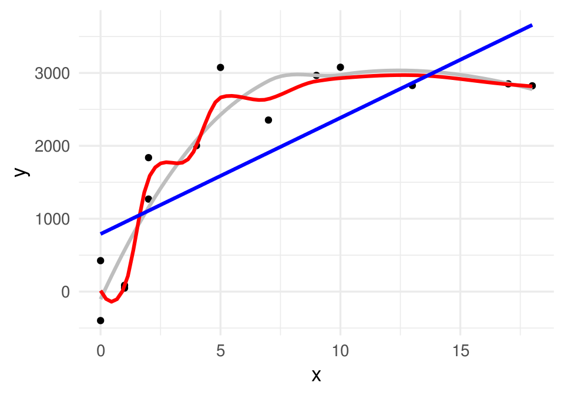
Calculamos los errores de entrenamiento de cada curva:
mod_rojo <- loess(y ~ x, data = datos_entrena, span=0.3)
mod_gris <- loess(y ~ x, data = datos_entrena, span=1)
mod_recta <- lm(y ~ x, data = datos_entrena)
df_mods <- data_frame(nombre = c('recta', 'rojo','gris'))
df_mods$modelo <- list(mod_recta, mod_rojo, mod_gris)error_f <- function(df, mod){
function(mod){
preds <- predict(mod, newdata = df)
round(sqrt(mean((preds - df$y) ^ 2)))
}
}
error_ent <- error_f(datos_entrena)
df_mods <- df_mods %>%
mutate(error_entrena = map_dbl(modelo, error_ent))
df_mods## # A tibble: 3 x 3
## nombre modelo error_entrena
## <chr> <list> <dbl>
## 1 recta <S3: lm> 782
## 2 rojo <S3: loess> 189
## 3 gris <S3: loess> 389El error de entrenamiento es considerablemente menor para la curva roja, y es más grande para la recta.
Sin embargo, consideremos que tenemos una nueva muestra (de prueba).
set.seed(218052272)
x_0 <- sample(0:13, 100, replace = T)
error <- rnorm(length(x_0), 0, 500)
y_0 <- f(x_0) + error
datos_prueba <- data_frame(x = x_0, y = y_0)
datos_prueba## # A tibble: 100 x 2
## x y
## <int> <dbl>
## 1 9 2156.
## 2 11 3227.
## 3 3 2382.
## 4 10 3482.
## 5 7 2733.
## 6 7 2326.
## 7 12 3464.
## 8 0 -564.
## 9 10 3296.
## 10 0 366.
## # ... with 90 more rowserror_p <- error_f(datos_prueba)
df_mods <- df_mods %>%
mutate(error_prueba = map_dbl(modelo, error_p))
df_mods## # A tibble: 3 x 4
## nombre modelo error_entrena error_prueba
## <chr> <list> <dbl> <dbl>
## 1 recta <S3: lm> 782 801
## 2 rojo <S3: loess> 189 628
## 3 gris <S3: loess> 389 520Observaciones
El “mejor”" modelo en entrenamiento es uno que sobreajusta a los datos, pero es el peor con una muestra de prueba. La curva roja aprende de la componente de ruido del modelo - lo cual realmente no es aprendizaje.
El modelo de la recta no es bueno en entrenamiento ni en prueba. Este modelo no tiene la capacidad para aprender de la señal en los datos.
El mejor modelo en la muestra de prueba es uno que está entre la recta y la curva roja en términos de flexibilidad.
Nuestra intuición para escoger el modelo gris desde el principio se refleja en que generaliza mejor que los otros, y eso a su vez se refleja en un error de prueba más bajo.
- ¿De dónde
provienen los errores en la predicción? ¿Podemos hacer el error igual a cero?
Si establemos que el error es una función
creciente de \(Y-\hat{Y}\), vemos que
\[ Y-\hat{Y} = f(X) + \epsilon - \hat{f}(X)= (f(X) - \hat{f}(X)) + \epsilon,\]
donde vemos que hay dos componentes que pueden hacer grande a \(Y-\hat{Y}\):
- La diferencia \(f(X) - \hat{f}(X)\) está asociada a error reducible, pues depende de qué tan bien estimemos \(f(X)\) con \(\hat{f}(X)\)
- El error aleatorio \(\epsilon\), asociado a error irreducible.
- Cualquiera de estas dos cantidades pueden hacer que nuestras predicciones no sean
precisas. No podemos hacer mucho acerca del error irreducible (sin cambiar las variables
que usamos, la definición del problema, etc.) En nuestro ejemplo anterior, el error reducible:
- Es grande para el modelo rojo, pues responde demasiado fuerte a ruido en los datos (tiene varianza alta).
- Es grande para el modelo de la recta, pues no tiene capacidad para acercarse a la verdadera curva (está sesgado).
1.5 Balance de complejidad y rigidez
Como vimos en el ejemplo de arriba, el error de entrenamiento no es un buen indicador del desempeño futuro de nuestras predicciones. Para evaluar este desempeño, necesitamos una muestra de prueba independiente de la muestra que usamos para aprender o para entrenar el modelo.
Intuitivamente esto tiene sentido: en el proceso de aprendizaje tenemos disponibles las etiquetas (sabemos las respuestas), de modo que puede suceder que el algoritmo memorice la asociación de qué etiquetas \(y^{(i)}\) van con cada conjunto de entradas \(x^{(i)}\). Esto se dice de varias maneras, por ejemplo:
El modelo sobreajusta a los datos: esto quiere decir que por ajustar aspectos de los datos de entrenamiento demasiado fuertemente, el algoritmo parece replicar de cerca los datos de entrenamiento pero se desempeña mal en la predicción.
El modelo aprende del ruido: nuestro proceso de aprendizaje captura aspectos irrelevantes de los datos, que nuevos datos no van a compartir.
El modelo no tiene capacidad de generalización, porque captura aspectos que solo están presentes en nuestra muestra de entrenamiento.
El modelo tiene varianza alta, porque cambia mucho dependiendo de la muestra de entrenamiento.
El modelo es demasiado complejo o flexible y fácilmente se adapta a cualquier conjunto de datos, tanto señal como ruido
En el ejemplo de arriba, también vimos que algunos modelos pueden tener desempeño malo porque no tienen la capacidad de aprender de patrones reales y generales en los datos (la recta en el ejemplo anterior). Podemos decir esto de varias maneras:
El modelo subajusta a los datos: no tienen la capacidad de ajustar aspectos de los datos de entrenamiento que son relaciones reales entre las variables.
El modelo ignora señal en los datos: el algoritmo no captura aspectos relevantes de los datos, que comparten con nuevos datos y pueden utilizarse para hacer predicciones.
El modelo no tiene capacidad de aprendizaje, pues no puede capturar aspectos que son generales para el fenómeno de interés.
El modelo tiene sesgo alto, porque no puede ajustar patrones generalizables en los datos.
El modelo es demasiado rígido, y no puede adaptarse ni siquiera a patrones fuertes y claros en los datos.
Logramos buenas predicciones cuando refinamos nuestros modelos o algoritmos para lograr aprender de la señal e ignorar el ruido, que no ayuda en la predicción, y lograr reducir el error de predicción lo más posible con los datos disponibles. Esto requiere buscar el nivel adecuado de complejidad en los modelos o algoritmos para los datos que tenemos.
Para construir buenos predictores, requerimos que:
- El algoritmo tenga la flexibilidad necesaria para capturar patrones generales y fuertes en los datos
- El algoritmo tenga la rigidez necesaria para tener robustez a patrones de ruido o particularidades no repetibles de nuestra muestra de entrenamiento.
- Saber intuitivamente cuál es el grado adecuado de complejidad para un problema dado es difícil. Para decidirlo, evaluamos el desempeño de nuestros métodos usando una muestra de prueba. El nivel adecuado de complejidad se traduce en menos errores de predicción.
1.5.0.1 Discusión (error de entrenamiento y prueba)
En términos teóricos, podemos ver cuál es el problema de intentar evaluar el error de predicción utilizando la muestra de entrenamiento.
En primer lugar consideremos evaluar el error de predicción para un ejemplo \[(y_0- \hat{f}(x_0))^2\]
donde \((x_0, y_0)\) es independiente de la muestra de entrenamiento. En este caso, la \(\hat{f}\) está fija, y el valor esperado (error de predicción) nos da el error de predicción.
Sin embargo, si \((x,y)\) es un caso de entrenamiento, el valor esperado de \[(y- \hat{f}(x))^2\] requiere un cálculo más complicado, pues ¡ \(\hat{f}\) también depende de \((x,y)\), pues se construye con la muestra de entrenamiento ! Esta cantidad podría ser igual a cero para cualquier \((x,y)\) (si nuestro algoritmo “interpola” como el en la curva roja del ejemplo anterior), y no necesariamente tiene qué ver con el error de predicción.
- En general, el error de entrenamiento es una cantidad secundaria, que utilizaremos más como medida de diagnóstico de nuestro proceso de ajuste. La cantidad que realmente queremos hacer chica es el error de predicción, que evaluamos con una muestra de prueba independiente de la muestra de entrenamiento.
- Para modelos muy simples, el error de entrenamiento puedes ser similar al de prueba. Sin embargo, conforme aumentamos complejidad (necesario para capturar patrones reales en los datos), estos dos errores típicamente divergen.
1.6 ¿Cómo estimar f?
Ahora mostramos otro aspecto característico del aprendizaje supervisado. En primer lugar, el método general más usual para encontrar \(\hat{f}\) es hacer lo siguiente:
- Consideramos una familia de funciones \(h\) candidatas para aproximar \(f\)
- Calculamos el error de entrenamiento de cada posible \(h\), y encontramos la \(h\) que minimiza el error de entrenamiento (la que más se ajusta a los datos de entrenamiento). Tomamos \(\hat{f} = h\). \[\hat{f} = \min_h \frac{1}{N}\sum_{i=1}^N (y^{(i)} - h(x^{(i)}))^2.\]
- Evaluar el error de predicción del modelo que seleccionamos (queremos que sea bajo):
\[\hat{Err} = \frac{1}{m}\sum_{j=1}^m (y_0^{(j)} - \hat{f}(x_0^{(j)}))^2\]
De modo que el proceso es un problema de minimización. Lo que hace interesante nuestro caso es que realmente no queremos minimizar el error de entrenamiento. Queremos minimizar el error de prueba. O sea que minimizamos una cantidad que realmente no nos interesa (error de entrenamiento) con la esperanza de minimizar la cantidad que nos interesa (error de predicción).
Como es de esperarse, este esquema simple no funciona muy bien en general. Para que la solución anterior sea razonable o buena, entonces:
- Tenemos que ser cuidadosos y poder regular la elección de la familia inicial de funciones (rectas? curvas muy flexibles? etc.), y/o
- A veces tenemos que modificar el objetivo del problema de minimización para que nos obligue encontrar un balance adecuado de complejidad y error de predicción bajo. Por ejemplo, penalizar el objetivo de modelos que son poco creíbles o demasiado complicados.
- Perturbar la muestra de entrenamiento de distintas maneras para evitar que un algoritmo aprenda información irrelevante
La mayor parte del curso se concentra en considerar qué familias podemos utilizar, qué modificaciones de la función objetivo pueden hacerse, y qué perturbaciones pueden considerarse mejorar el desempeño predictivo de nuestros modelos.
1.7 Resumen
Aprendizaje de máquina: algoritmos que aprenden de los datos para predecir cantidades numéricas, o clasificar (aprendizaje supervisado), o para encontrar estructura en los datos (aprendizaje no supervisado).
- En aprendizaje supervisado, el esquema general es:
- Un algoritmo aprende de una muestra de entrenamiento \({\mathcal L}\), que es generada por el proceso generador de datos que nos interesa. Eso quiere decir que produce una función \(\hat{f}\) (a partir de \({\mathcal L}\)) que nos sirve para hacer predicciones \(x \to \hat{f}(x)\) de \(y\)
- El error de predicción del algoritmo es \(Err\), que mide en promedio qué tan lejos están las predicciones de valores reales.
- Para estimar esta cantidad usamos una muestra de prueba \({\mathcal T}\), que es independiente de \({\mathcal L}\).
- Esta es porque nos interesa el desempeño futuro de \(\hat{f}\) para nuevos casos que el algoritmo no ha visto (esto es aprender).
El error en la muestra de entrenamiento no necesariamente es buen indicador del desempeño futuro de nuestro algoritmo.
Para obtener las mejores predicciones posibles, es necesario que el algoritmo sea capaz de capturar patrones en los datos, pero no tanto que tienda a absorber ruido en la estimación - es un balance de complejidad y rigidez. En términos estadísticos, se trata de un balance de varianza y sesgo.
1.8 Tarea
En el ejemplo simple que vimos en la sección 1.4, utilizamos una sola muestra de entrenamiento para evaluar el algoritmo. ¿Será posible que escogimos una muestra atípica?
- Corre el ejemplo con otra muestra y reporta tus resultados de error de entrenamiento y error de prueba para los tres métodos.
- Opcional (difícil): evalúa los tres métodos comparando estos valores para un número grande de distintas simulaciones de los datos de entrenamiento.